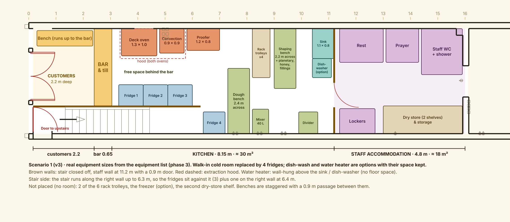
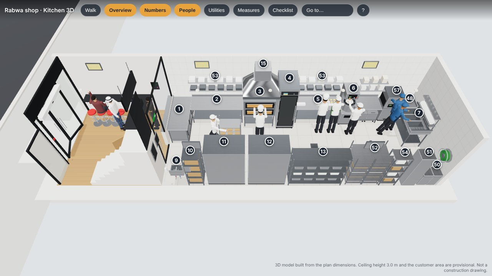
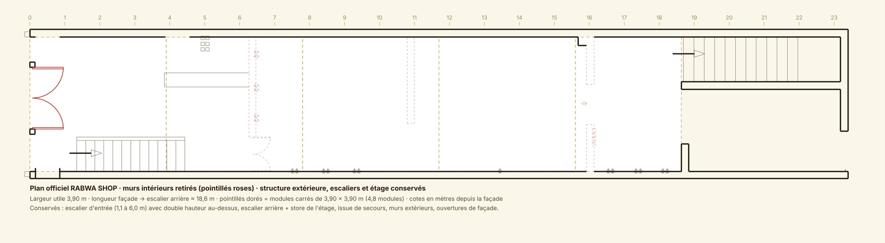

The shop is a long, narrow unit, so the plan follows one logic: customers at the street, a short bar and till, a working kitchen behind it, and the staff area at the back. The stair to the upper floors stays on the side, behind a closed wall with its own door.

Production flows from the dough bench, to the shaping bench, to the proofer and then the ovens, which sit under one extraction hood next to the bar. Four fridges replace a walk-in cold room, which would not fit. Dish-washing and the water heater are options, and their space is kept free.
| Item | Size or note |
|---|---|
| Deck oven | 1.3 × 1.0 m |
| Convection oven | 0.9 × 0.9 m, under the same hood |
| Proofer | 1.2 × 0.8 m |
| Dough bench | 2.4 m across |
| Shaping bench | 2.2 m across, for planetary mixer, honey and fillings |
| Mixer | 40 L |
| Divider | one unit |
| Fridges | 4 units |
| Sink | 1.1 × 0.8 m, dish-washer as an option |
| Rack trolleys | 4 placed |
| Staff | rest room, prayer room, WC with shower, lockers, dry store |
Equipment models, brands and prices are covered in the budget dossier, which comes separately.
Move through the shop and the upper floors as if you were there. You can switch the façade design, and turn on layers such as electricity, water and drainage to see where they run.

Open the 3D walk-through